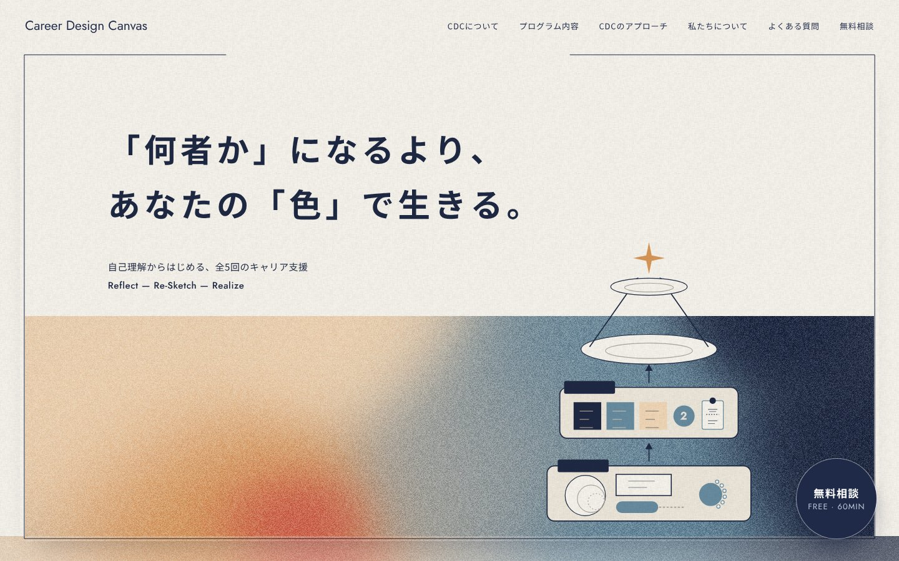
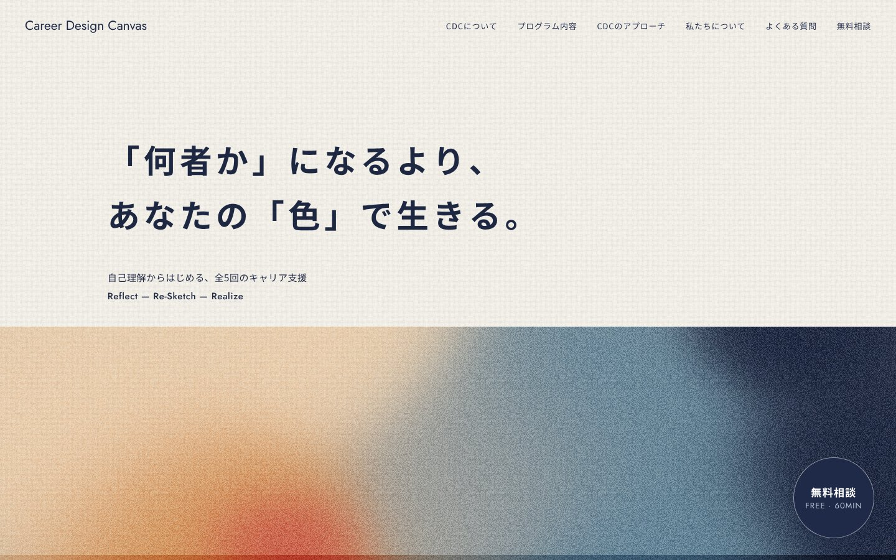
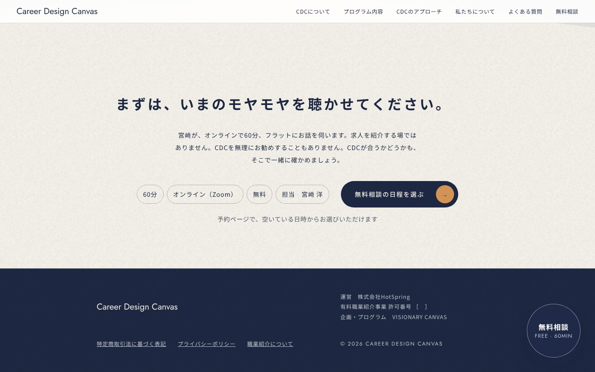
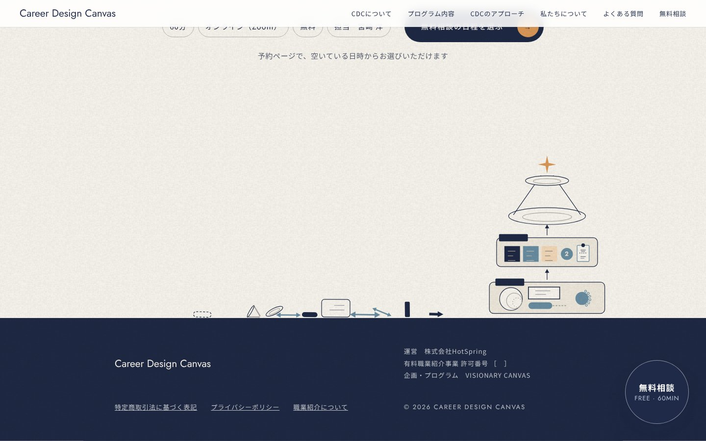
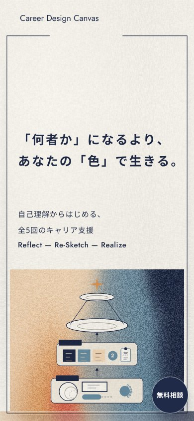
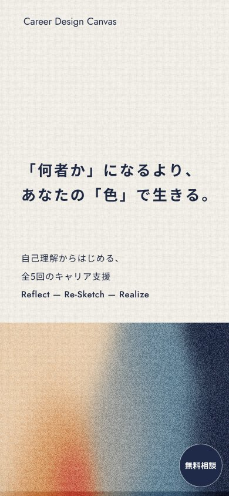
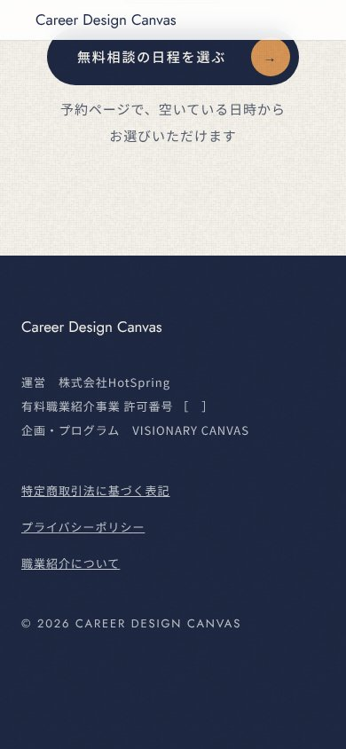
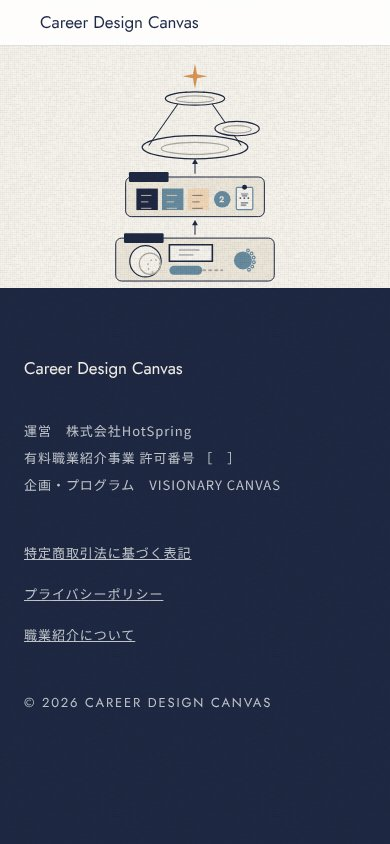

一番上の額縁を外し、図解とがらくたをページの一番下へ（試し）
一番上は見出しと色の帯だけにしました。積み上がる図解と、カーソルを動かすと落ちるがらくたは、最後の無料相談の下・フッターの上の場所に移し、フッターの紺の上に積み上がります。この場所が画面に入ったときに組み上がりはじめます。
試しのページで見る（一番下までスクロールして、カーソルを動かす）いまのページPC 1440×900 一番上
いま

試し

PC 1440×900 一番下
いま

試し（がらくたはカーソルを動かした分だけ落ちる）

スマホ 390 左から：いまの一番上・試しの一番上・いまの一番下・試しの一番下



